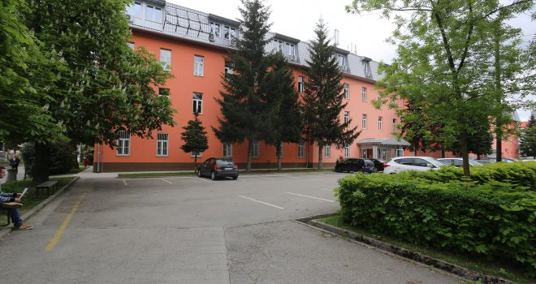

Razvoj softvera
Početna
Kontakt
Godine
Osoblje
Laboratorije
Predmeti
Predmeti prve godine
Matematika u računarstvu 1
Uvod u programiranje
Frontend web tehnologije
Uvod u baze podataka
Računarska pismenost
Matematika u računarstvu 2
Tehnike programiranja
Razvoj softvera
Računarske arhitekture i mreže
Vjerovatnoća i statistika
Predmeti druge godine
Algoritmi i strukture podataka
Programski jezici i prevodioci
Interakcija čovjek-računar
Backend web tehnologije
Skladišta podataka
Verifikacija i validacija softvera
Razvoj mobilnih aplikacija
Napredni razvoj softvera
Osnove informacionih sistema

Elektrotehnički fakultet Sarajevo
Razvoj softvera
etf.unsa.ba